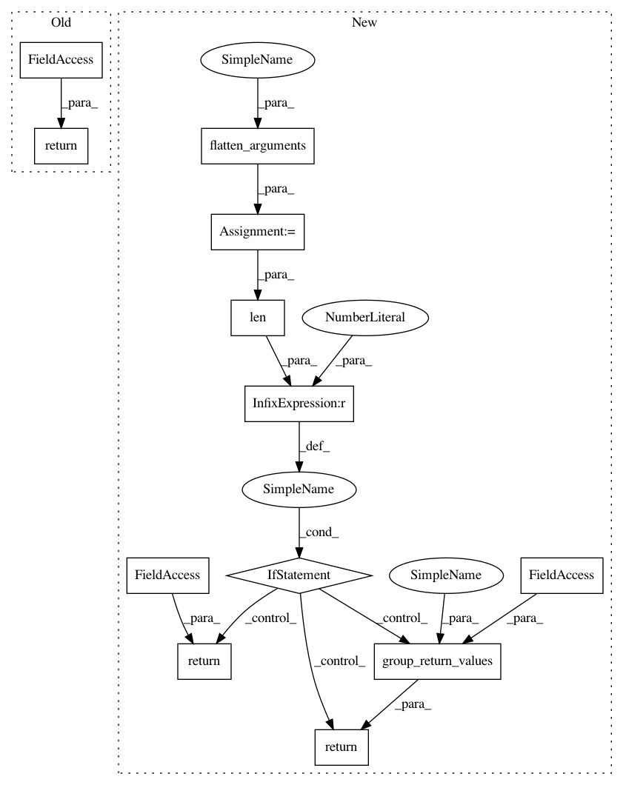

8f3df29a1c72231850b2fb50360c4d228b764ab4,pymanopt/autodiff/backends/_pytorch.py,_PyTorchBackend,compute_gradient,#_PyTorchBackend#Any#Any#,63
Before Change
except AttributeError:
pass
return g
return grad
@Backend._assert_backend_available
def compute_hessian(self, objective, argument):
raise NotImplementedError
After Change
@Backend._assert_backend_available
def compute_gradient(self, function, arguments):
flattened_arguments = flatten_arguments(arguments)
if len(flattened_arguments) == 1:
@functools.wraps(function)
def unary_gradient(argument):
torch_argument = torch.from_numpy(argument)
torch_argument.requires_grad_(True)
function(torch_argument).backward()
return torch_argument.grad.numpy()
return unary_gradient
def nary_gradient(arguments):
torch_arguments = []
for argument in flatten_arguments(arguments):
torch_argument = torch.from_numpy(argument)
torch_argument.requires_grad_()
torch_arguments.append(torch_argument)
function(*torch_arguments).backward()
return [argument.grad.numpy() for argument in torch_arguments]
return group_return_values(nary_gradient, arguments)
@Backend._assert_backend_available
def compute_hessian(self, objective, argument):
raise NotImplementedError
In pattern: SUPERPATTERN
Frequency: 3
Non-data size: 12
Instances
Project Name: pymanopt/pymanopt
Commit Name: 8f3df29a1c72231850b2fb50360c4d228b764ab4
Time: 2020-01-27
Author: niklas.koep@gmail.com
File Name: pymanopt/autodiff/backends/_pytorch.py
Class Name: _PyTorchBackend
Method Name: compute_gradient
Project Name: pymanopt/pymanopt
Commit Name: e97a5389cd4169b54ded7eb173fc0d4d3f4cf8d5
Time: 2020-01-27
Author: niklas.koep@gmail.com
File Name: pymanopt/autodiff/backends/_tensorflow.py
Class Name: _TensorFlowBackend
Method Name: compute_gradient
Project Name: pymanopt/pymanopt
Commit Name: 7ee672fda5a01e29375439b6a18fb1971f90d3c5
Time: 2020-01-27
Author: niklas.koep@gmail.com
File Name: pymanopt/autodiff/backends/_tensorflow.py
Class Name: _TensorFlowBackend
Method Name: compute_hessian
Project Name: pymanopt/pymanopt
Commit Name: 8f3df29a1c72231850b2fb50360c4d228b764ab4
Time: 2020-01-27
Author: niklas.koep@gmail.com
File Name: pymanopt/autodiff/backends/_pytorch.py
Class Name: _PyTorchBackend
Method Name: compute_gradient